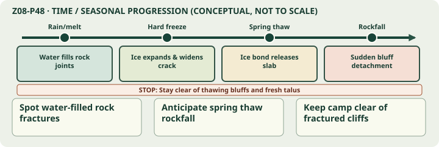

Z08-P48 · Rocks, minerals and materials · New manuscript
Freeze-Thaw Weathering and Rock Joint Progression
Recognize frost-wedging expansion in Upper Midwest bedrock and boulders that destabilizes cliffs, talus slopes, and stone stacks.
When it applies · Late autumn, winter thaw, and spring runoff across bluffs and rocky shorelines.
Equipment · Visual inspection from safe setback.

Actions
- Understand that water expanding roughly nine percent upon freezing drives progressive frost wedging along rock joints and sedimentary bedding planes.[R13, R16]
- Expect peak rockfall and bluff slumping during spring melt and mid-winter thaw-refreeze swings even on calm sunny days.[R13, R16]
- Inspect stacked trail cairns, stone fire rings, and bluff ledges for freshly cracked or spalled fragments before approaching.[R13, R16]
Failure recognition · Assuming cold frozen rock is permanently locked in place exposes travelers to sudden afternoon thaw rockfall.[R13, R16]
Verify · Camps and rest stops stay clear of fractured bluff walls and active talus aprons during freeze-thaw seasons.[R16]
Stop or change course · Stop lingering beneath cliff overhangs or thawing roadcuts whenever meltwater drips from rock joints.[R13, R16]
Evidence and editorial notes
- R13 · National Park Service · Rocks and Minerals Geological Overview (Current web edition)
- Section: Rocks and Minerals overview · Conditions: Unrated stones near a fire or during thermal cycling
Support: Use agency-approved fire facilities and keep people away from cracking or shifting material.
Limitations: Editorial avoidance. The cited geology overview does not establish a safe rock type, moisture test or heating threshold. · Conflicting evidence: Conditions are recorded in the A03 audit.
Editorial note: Reinforces Z03/Z08 wet-rock spalling stop. · Specialist reviewer: Geologist and fire safety reviewer
Primary source · checked 2026-11-25 - R16 · Minnesota DNR · Rocks and Minerals of Minnesota Educational Guide (Current web edition)
- Section: Sedimentary limestone, sandstone, and shale permeability · Conditions: Southeastern Minnesota karst, bluff, and river-valley sedimentary strata
Support: Sandstone, limestone, and shale differ sharply in cementation, porosity, and fissility, governing weathering and cliff instability.
Limitations: Karst bluffs and fractured shales shed rockfall unpredictably; visual inspection cannot certify slope or load stability. · Conflicting evidence: None noted.
Editorial note: Covers Upper Midwest sedimentary rock hazards. · Specialist reviewer: Engineering geologist
Primary source · checked 2026-11-25
Source lineage · New manuscript (Z08 P16 material degradation) · Classification · New manuscript.